October 20, 2010
(Next Release on October 27, 2010)
U.S. Refinery Potential to Produce More Distillate to Meet Changing Markets
U.S. refiners face a changing outlook for gasoline and middle distillate fuels (diesel, heating oil, jet fuel and kerosene) demand, with the need for petroleum-based gasoline declining and middle distillate consumption growing. Below, we examine the forces that are shifting consumption patterns, and consider how refiners can respond.
Both gasoline and middle distillate fuel consumption fell during the recent economic downturn, but gasoline fell less. The bulk of U.S. middle distillate consumption comes from heavy duty trucking and air travel, which are both affected strongly by economic activity. Gasoline consumption, on the other hand, is more sensitive to changes in personal income, which fared better than economic activity during the downturn, and prices. Once the economy began to recover, middle distillate fuels exhibited stronger growth than gasoline. Over the January through July 2010 period, distillate fuel consumption was 2 percent above its level over the comparable year-ago period while gasoline consumption remained flat.
Longer-term factors also suggest a growing need to produce more middle distillate fuels relative to gasoline. The consumption of petroleum-based gasoline is likely to decline for at least the next 5 years due to increasing light-duty vehicle efficiency standards and the growing use of renewable motor fuels and blending components as mandated by the Energy Independence and Security Act of 2007. From 2010 through 2015, EIA’s 2010 Annual Energy Outlook shows U.S. gasoline consumption (which includes volumes of ethanol blended into the fuel) to be relatively flat, which implies a reduced need for petroleum-based gasoline once the increasing volumes of ethanol that suppliers will blend into gasoline are taken into account.
In contrast, EIA’s Annual Energy Outlook 2010 projects that U.S. middle distillate consumption will continue to grow in the longer term, averaging 1.6 percent per year growth from 2010 to 2015. The forecast has heavy-duty vehicles experiencing less improvement in vehicle efficiency than anticipated in the light duty fleet, and little non-petroleum fuel penetrating distillate fuel markets.
In addition, U.S. refiners have recently had a robust export market for middle distillate fuels. In 2008, the United States switched from being a net importer to a net exporter of middle distillates, as surging world demand produced strong price incentives for U.S. refiners to export. Most U.S. exports went to markets in Europe and Latin America. (Figure 1) U.S. refinery middle distillate yields during summer 2008 jumped 3.4 percentage points over summer 2007 from changes to refinery operations alone, allowing refiners to produce more distillate for export while avoiding surplus production of gasoline. Even though distillate margins have receded from 2008 levels, export opportunities remain attractive, and distillate export volumes have stayed high.
In the United States, the incentive for refiners to supply less gasoline and more distillate fuel may persist for years to come, while U.S. total petroleum demand remains relatively flat. This raises the question of how far U.S. refiners can increase their middle distillate/gasoline production ratios without making significant investments.
A review of actual refinery production, consultation with refiners and process experts, and some refinery modeling, indicates that U.S. refineries in aggregate likely have the ability to increase significantly annual average distillate yields on crude and unfinished oil inputs. Yields could rise 3 to 5 percentage points over typical historical yields of about 35 percent with little or no investments for distillation unit improvements. When planned hydrocracking increases are taken into consideration, the increase in distillate yields could rise to the 4-to-8 percentage point range. (Planned hydrocracking units are targeted for increased distillate fuel production.)
To put these yield changes in perspective, a single percentage point increase in middle distillate yield produces about 150,000 barrels per day more middle distillate volume (based on typical recent levels of 15 million barrels per day of crude oil and unfinished oil inputs). Thus, an increase of 5 percentage points produces an additional 750,000 barrels per day of middle distillate fuel, which is about 15 percent of U.S. middle distillate consumption.
Even if the economy recovers more rapidly than currently forecast and petroleum product demand picks up faster than expected, distillate would still be expected to grow more rapidly than gasoline. Surplus refinery capacity in the United States and Europe appears sufficient to absorb higher consumption growth rates than currently forecast by EIA. Given the outlook for rising distillate consumption, potential yield increases will enable U.S. refiners to meet changing U.S. demand patterns and increased distillate export requirements for at least the next 5 years, if not longer, without significant investments beyond those currently planned. In particular, it appears that U.S. refiners’ export volumes will be limited by market conditions between now and 2015, rather than by their capacity to produce more distillate.
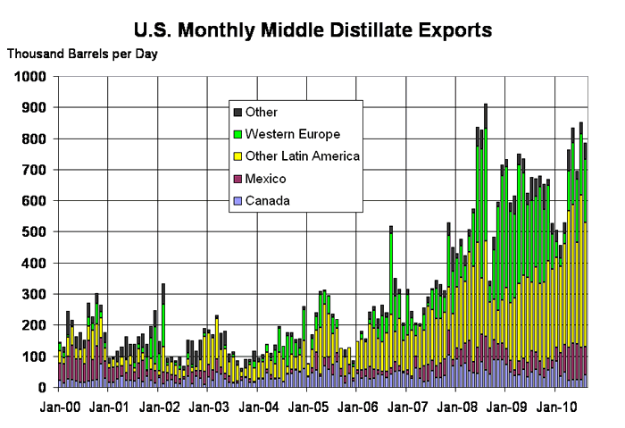
Retail Gasoline and Diesel Prices Continue to Climb
The U.S. average retail price for a gallon of gasoline rose for the third straight week, increasing over a penny from last week to $2.83 per gallon and was $0.26 per gallon higher than last year at this time. The biggest price increases this week occurred on the West Coast (up a nickel from last week), followed by the East Coast, which increased four cents. The Gulf Coast and Rocky Mountain regions experienced price increases of less than a penny. The Midwest was the only region where the average declined, falling two cents versus last week.
The retail diesel price was up slightly this week, with the national average gaining less than a penny to stay at $3.07 per gallon, $0.37 higher than last year. The price in the Rocky Mountains moved up almost three cents from last week, which was the biggest increase in the country. The West Coast saw the price rise a penny versus last week to remain the highest in the country at $3.25 per gallon. The Midwest and East Coast regions saw smaller price increases of just under a penny, while the Gulf Coast had a small price decrease of less than half a cent.
Propane Stocks Begin their Descent
U.S. inventories of propane have begun their descent as fall crop-drying begins and winter heating season approaches. Total U.S. inventories fell by 0.7 million barrels last week with all regions experiencing a draw. The Gulf Coast region led the decline with a draw of 0.5 million barrels. The East Coast and Midwest regions each drew 0.1 million barrels of propane stocks, while New England stocks fell 63 percent from last week to just 39 thousand barrels due to an ongoing pipeline outage and other supply issues. The Rocky Mountain/West Coast regional stocks were down slightly. Propylene non-fuel use inventories percentage share of total propane/propylene inventories remained at 3.3 percent.
Residential Heating Fuels Rise $0.02 per gallon
Residential heating oil prices increased during the period ending October 18, 2010. The average residential heating oil price gained $0.02 per gallon last week to reach $2.97 per gallon, an increase of $0.33 per gallon from the same time last year. Wholesale heating oil prices decreased $0.04 per gallon to $2.31 per gallon, which is still $0.21 per gallon more than at this time last year.
The average residential propane price increased, rising $0.02 per gallon to reach $2.41 per gallon. This was an increase of $0.30 per gallon compared to the $2.11 per gallon average from the same period last year. Wholesale propane prices decreased $0.04 per gallon, from $1.33 per gallon to $1.29 per gallon. This was an increase of $0.20 per gallon when compared to the October 19, 2009 price of $1.09 per gallon.
Text from the previous editions of This Week In Petroleum is accessible through a link at the top right-hand corner of this page.
| Retail Prices (Dollars per Gallon) | |||||||
| 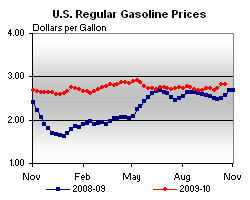 | 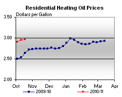 | ||||||
| 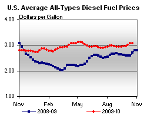 | 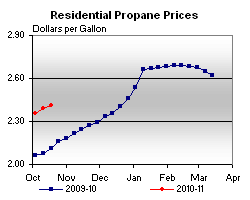 | ||||||
| Retail Data | Changes From | Retail Data | Changes From | ||||
| 10/18/10 | Week | Year | 10/18/10 | Week | Year | ||
| Gasoline | 2.834 | Heating Oil | 2.969 | ||||
| Diesel Fuel | 3.073 | Propane | 2.413 | ||||
| Futures Prices (Dollars per Gallon*) | |||||||||||||||||||||||||||
| 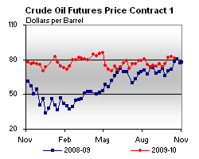 | 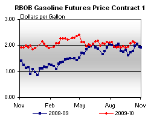 | ||||||||||||||||||||||||||
|
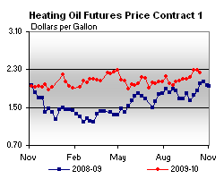 | ||||||||||||||||||||||||||
| *Note: Crude Oil Price in Dollars per Barrel. | |||||||||||||||||||||||||||
| Stocks (Million Barrels) | |||||||
| 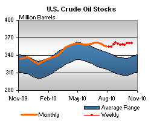 | 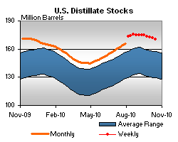 | ||||||
| 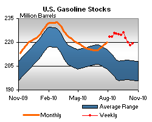 | 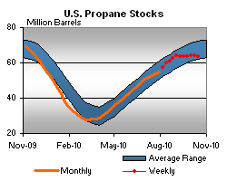 | ||||||
| Stocks Data | Changes From | Stocks Data | Changes From | ||||
| 10/15/10 | Week | Year | 10/15/10 | Week | Year | ||
| Crude Oil | 361.2 | Distillate | 170.1 | ||||
| Gasoline | 219.3 | Propane | 63.549 | ||||